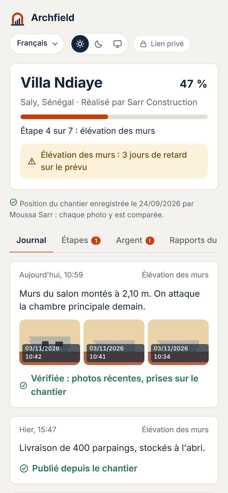
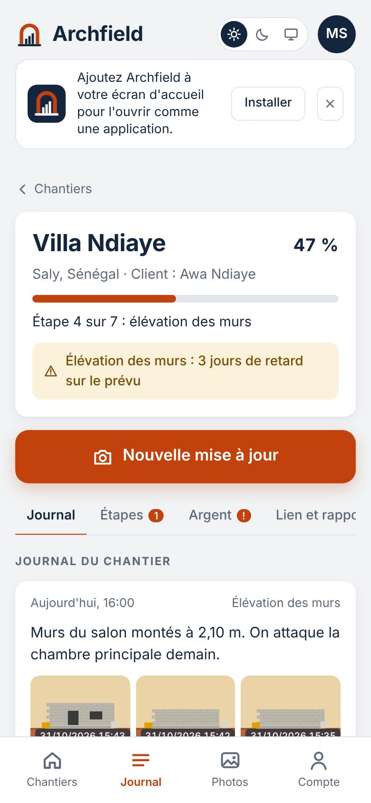

Votre chantier,
comme si vous y étiez.
L'artisan publie photos et avancement en 30 secondes. Vous suivez tout, même à des milliers de kilomètres.
L'artisan publie photos et avancement en 30 secondes. Vous suivez tout, même à des milliers de kilomètres.

Photos datées, étapes à valider, devis et rapport chaque lundi. Sans appeler l'artisan.
Votre entreprise ou un proche sur place publie l'avancement. Vous suivez chaque étape, où que vous soyez.
